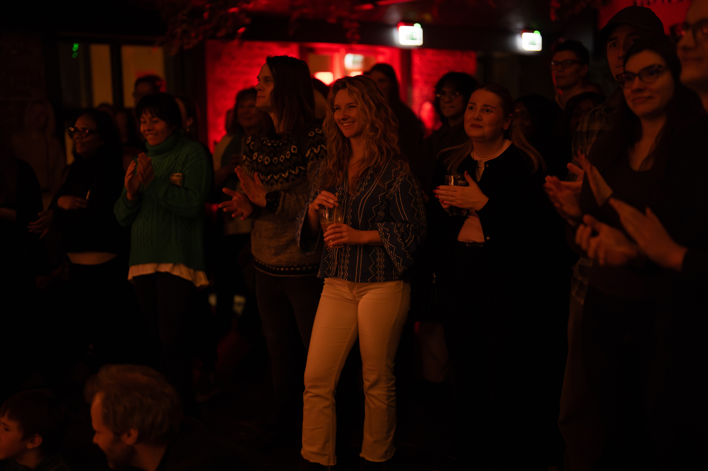

![[Koret på scenen]](DSC_8252.jpg)
Markedsvalidering
100+ solgte billetter & vi imponerte stort!
Vår debutreise beviste at det er plass til et kor som snakker gründerens språk.
Øvelser 2026
14
Hittil (5 gjenstår)
Medlemmer
23
+ 2 dirigenter
Debut-impact
100+
Billetter solgt
Vannhull
~75k
NOK på Skyggesiden
Innsikt: N=16
Kulturmål
87,5 % ønsker Runway-regelen
14 av 16 medlemmer er enige: For å sikre kvalitet krever vi minst 80 % oppmøte.
87%
![[Øvelse]](PHOTO-2026-01-06-18-25-39.jpg)
Sammensetning
The Builders (Gründere/Ansatte)
50%
Startup Village (Investorer/Hubs)
33%
Øvingsfrekvens
67% Perfekt balanse | 17% Øve oftere
Konsert-magi: Debuten





The Keepers
- Optimist / Penger, penger100%
- Lean on me / Under Pressure67%
- Unstoppable / Fix You50%
Den Store Backlogen
- • The Gambler
- • Start me up
- • Billionaire
- • Final Countdown
- • Dont stop believing
- • Show must go on
- • Crazy
- • Work, work bitch
- • Oops I did it again
- • Mitt liv
- • Spelldåsa
- • Should I stay or go
- • All by myself
- • This is me
- • Churn baby churn
- • Fight song